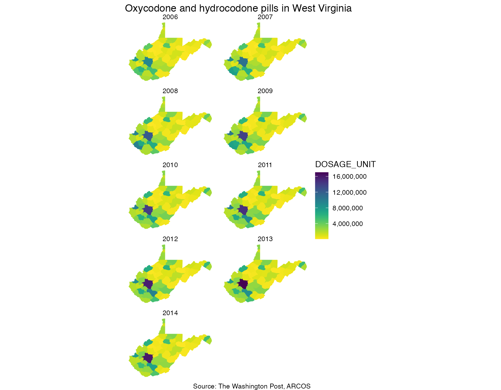
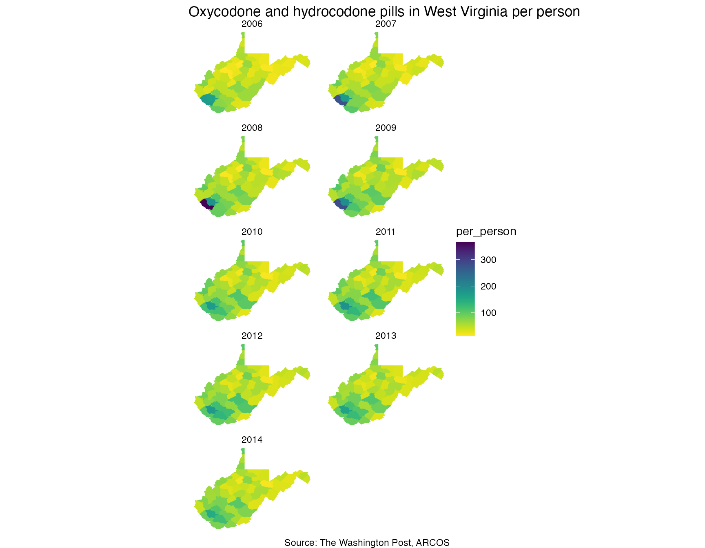

Let’s look at how many pills have gone to each county in West Virginia.
# Uncomment and run the lines below to see if you have the packages required already installed
# packages <- c("tidyverse", "jsonlite", "knitr", "geofacet", "scales", "forcats")
# if (length(setdiff(packages, rownames(installed.packages()))) > 0) {
# install.packages(setdiff(packages, rownames(installed.packages())), repos = "http://cran.us.r-project.org") # }
# These are all the packages you'll need to run everything below
library(arcos)
library(knitr)
library(tigris)
library(viridis)
library(dplyr)
library(ggplot2)
library(scales)
library(forcats)First, let’s look at the pharmacies in Mingo, West Virginia.
The total pills per pharmacy in a county can be pulled in with total_pharmacies_county().
mingo <- total_pharmacies_county(county = "Mingo", state="WV", key="WaPo")
kable(head(mingo))| buyer_state | buyer_county | buyer_dea_no | buyer_name | buyer_city | total_dosage_unit | total_records |
|---|---|---|---|---|---|---|
| WV | MINGO | BS7437064 | STROSNIDER | KERMIT | 13168350 | 7691 |
| WV | MINGO | BH6954401 | HURLEY DRUG COMPANY INC | WILLIAMSON | 8890370 | 11138 |
| WV | MINGO | FT0251227 | TUG VALLEY PHARMACY, LLC | WILLIAMSON | 8827860 | 5390 |
| WV | MINGO | FR0261684 | RIVERSIDE PHARMACY | GILBERT | 1780680 | 2249 |
| WV | MINGO | AA8151728 | ADKINS PHARMACY INC | GILBERT | 1576200 | 2491 |
| WV | MINGO | FG0153863 | GILBERT PHARMACY | GILBERT | 1403720 | 3138 |
Which were the most prolific pharmacies in Mingo between 2006 and 2014?
Let’s chart them out.
ggplot(mingo,
aes(x=total_dosage_unit, y=fct_reorder(buyer_name, total_dosage_unit))) +
geom_segment(
aes(x = 0,
y=fct_reorder(buyer_name, total_dosage_unit),
xend = total_dosage_unit,
yend = fct_reorder(buyer_name, total_dosage_unit)),
color = "gray50") +
geom_point() +
scale_x_continuous(label=comma) +
labs(x="Dosage units", y="",
title = "Pills sold at Mingo, WV pharmacies",
subtitle = "Between 2006 and 2014",
caption = "Source: The Washington Post, ARCOS") +
theme_minimal()
Okay, now we can look at all the counties in West Virginia.
Pull that data with summarized_county_annual().
wv <- summarized_county_annual(state="WV", key="WaPo")
kable(head(wv))| BUYER_COUNTY | BUYER_STATE | year | count | DOSAGE_UNIT | countyfips |
|---|---|---|---|---|---|
| BARBOUR | WV | 2006 | 1044 | 508100 | 54001 |
| BARBOUR | WV | 2007 | 1310 | 625150 | 54001 |
| BARBOUR | WV | 2008 | 1632 | 766200 | 54001 |
| BARBOUR | WV | 2009 | 1823 | 869860 | 54001 |
| BARBOUR | WV | 2010 | 2137 | 945110 | 54001 |
| BARBOUR | WV | 2011 | 2174 | 969850 | 54001 |
For easy mapping, we’ll use Census shape files pulled with the Tigris package.
## Set the option for shapefiles to load with sf
options(tigris_class = "sf")
## Function to download county shapefiles in West Virginia
wv_shape <- counties(state="WV", cb=T)
## Join the county dosage data we pulled
wv <- left_join(wv, wv_shape, by=c("countyfips"="GEOID"))
# Mapping with ggplot2, sf, and viridis
wv %>%
ggplot(aes(geometry=geometry, fill = DOSAGE_UNIT, color = DOSAGE_UNIT)) +
facet_wrap(~year, ncol=2) +
geom_sf() +
coord_sf(crs = 26915) +
scale_fill_viridis(direction=-1, label = comma) +
scale_color_viridis(direction=-1, label = comma) +
theme_void() +
theme(panel.grid.major = element_line(colour = 'transparent')) +
labs(title="Oxycodone and hydrocodone pills in West Virginia", caption="Source: The Washington Post, ARCOS")
Looks nice. You should probably adjust for population next.
population <- county_population(state="WV", key="WaPo") %>%
# isolate the columns so it doesn't conflict in a join (there are doubles, that's why)
select(countyfips, year, population)
left_join(wv, population) %>%
mutate(per_person=DOSAGE_UNIT/population) %>%
ggplot(aes(geometry=geometry, fill = per_person, color = per_person)) +
facet_wrap(~year, ncol=2) +
geom_sf() +
coord_sf(crs = 26915) +
scale_fill_viridis(direction=-1, label = comma) +
scale_color_viridis(direction=-1, label = comma) +
theme_void() +
theme(panel.grid.major = element_line(colour = 'transparent')) +
labs(title="Oxycodone and hydrocodone pills in West Virginia per person", caption="Source: The Washington Post, ARCOS")